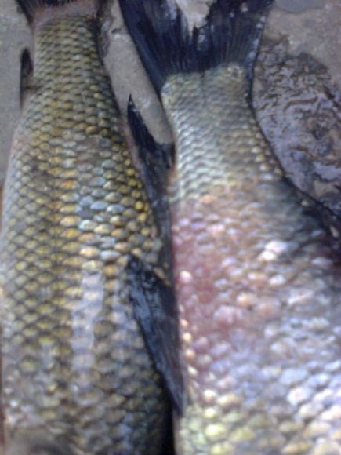
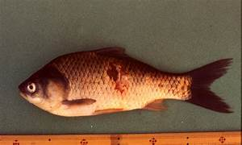
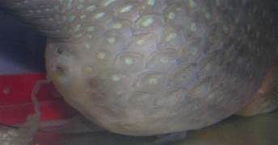
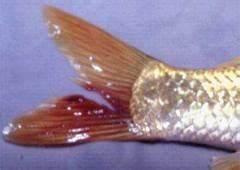
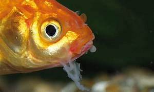
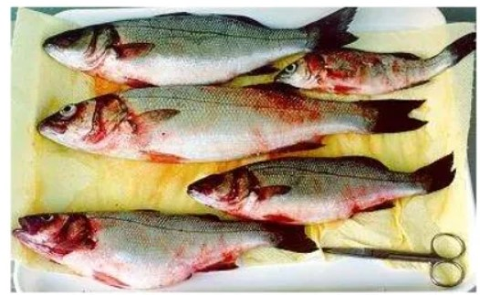

Azithrommycin and trimethoprim

Furazolidone,Ampicillin spp
The Temperature range of the Roopchand Fish is in between the 20-24°C
| Disease | Image | Medicine to cure | Company of Medicine |
|---|---|---|---|
| Ichthyophthirius Multifiliis |  | Praziquante,Ich-Specific Medications,Salt Treatment,Formalin Azithrommycin and trimethoprim |
Nobleza Enterprises,Aquasonic Pty Ltd,Aquasonic Pty Ltd |
| Flavobacterium Columnare | |
Oxytetracycline,Ampicillin,Enrofloxacin,Sulfonamides | Nobleza Enterprises,Sera,Kyoritsu Seiyaku Corporation |
| Chiodonella,Florfenicol,Sulfonamides, Furazolidone,Ampicillin spp |
 | Formalin,Florfenicol,Sulfonamides,Praziquantel | Hikari,Aquasonic Pty Ltd,API (Aquarium Pharmaceuticals, Inc.) |
| Ichthyobodo Necator |  | Bronopol,Praziquantel,Potassium Permanganate,Copper-based Medications | Hikari,Aquasonic Pty Ltd,API (Aquarium Pharmaceuticals, Inc.) |
| Disease | Image | Medicine to cure | Company of Medicine |
|---|---|---|---|
| Saprolegniasis |  | Malachite Green,Formalin,Acriflavine,Salt Baths | Hikari,Aquasonic Pty Ltd,Sera |
| Oomycete infection |  | Formalin,Malachite Green,Hydrogen Peroxide,Salt Baths | Nobleza Enterprises,Kyoritsu Seiyaku Corporation,Aquasonic Pty Ltd |
| Branchiomycosis |  | Oxytetracycline,Enrofloxacin,Florfenicol,Trimethoprim-Sulfamethoxazole | Kyoritsu Seiyaku Corporation,Seachem,Nobleza Enterprises |
© 2023 Aquaculture Temperature Diseases
Follow our website on chrome